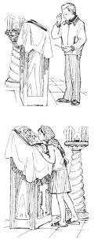

If it is an icon of the Saviour, one should kiss the feet of Christ. If the image shows Him from the waist up, one kisses the hands; and if only the Face is depicted, as for instance in the Icon of the Saviour Not-Made-by-Hands, then one kisses the edge of the cloth on which the Face of Christ is depicted. With the same reverence one venerates the icons of the Mother of God and of the saints. One should not kiss the face itself of the Saviour, of the Mother of God, or of a saint.
Several saints may be depicted on one icon, but it is enough to venerate it once, so as not to delay others or to disturb the good order of the church.
When you venerate the Crucifix, the holy relics, or an especially revered icon of the Mother of God, the bows may also be full prostrations. But if there are many people and there is nowhere to make a prostration, do not be discouraged: you will be able to bow another time, and for now bow to the ground in your soul, for the Lord sees all. If many people are standing near the icon, try not to linger. Always remember the others who also wish to venerate it.
If you wish to pray for the health of your family and those close to you, you may place a candle before any icon of the Saviour, of the Mother of God, or of a saint.
But if you wish to pray for the repose of the departed, you should place (or pass forward) a candle at the kanon, also called the kanun. This is the memorial table, standing as a rule in the western part of the church, not far from the entrance. On it are the Crucifix of the Lord and a great many candles.
After you have venerated the holy things, you may greet those you know and wish them a blessed feast, if no service is going on at that time. But it is desirable that all conversation be spiritual and churchly, and that talk of everyday, worldly matters be left outside the church.
If you are asked about something, be patient and do not refuse your help. But do not hinder others from praying, do not distract them from the service, and if it is possible, put the conversation off until after the service.
For a person who is not familiar with the ways of the church, it can be very hard to know whom to approach with a question. First of all, you may turn to those who work in the church. They are usually authorised by the rector to answer the most basic and simple questions.
In Orthodox churches today there are one or more counters (candle desks) at the entrance. Most often there are two, to the right and to the left of the entrance. Behind each of them are attendants, usually women. At these counters candles, icons, books and crosses are sold, and commemoration notes are received. There you may ask your questions. But it is better to turn to the clergy.